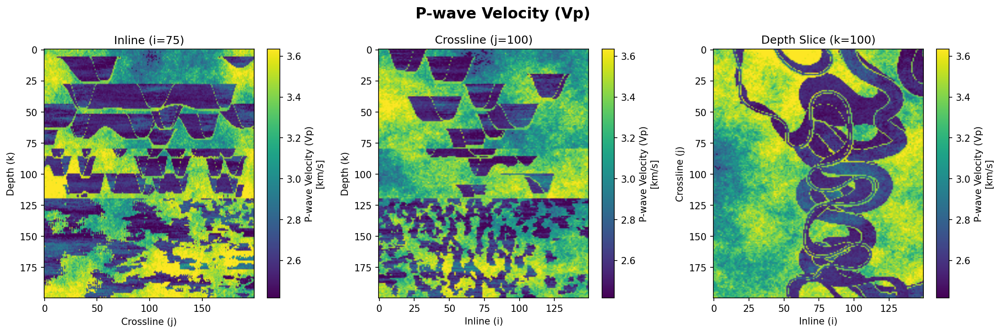
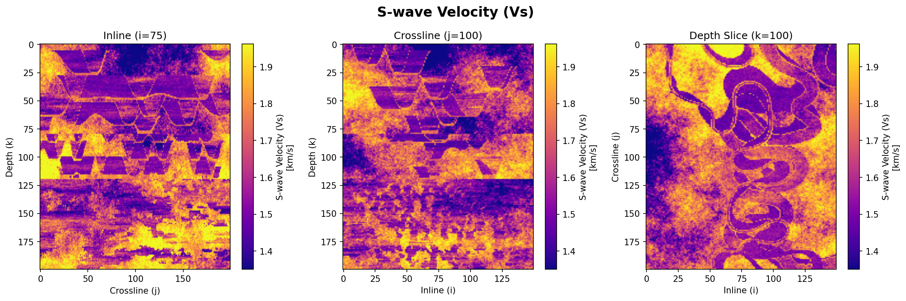
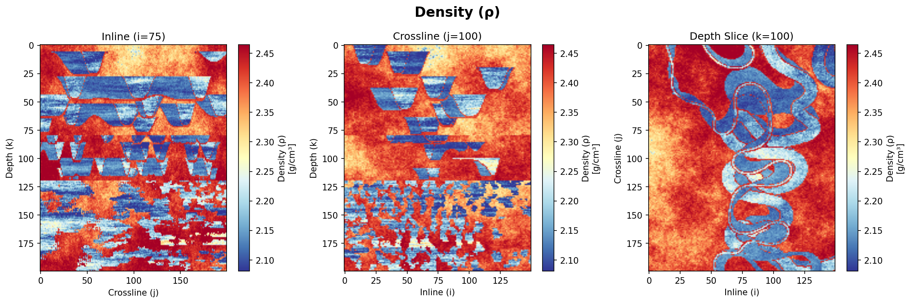
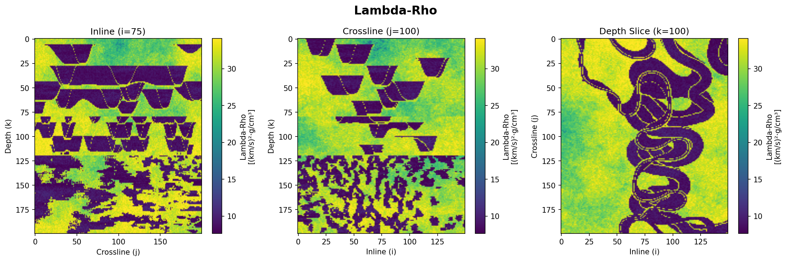
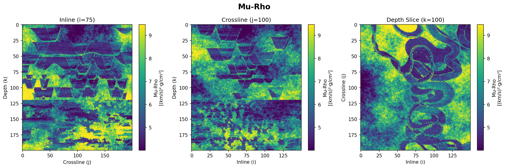
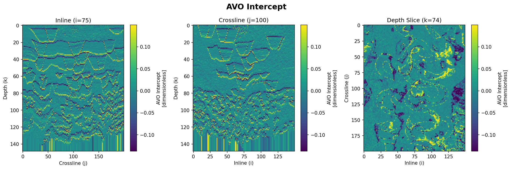
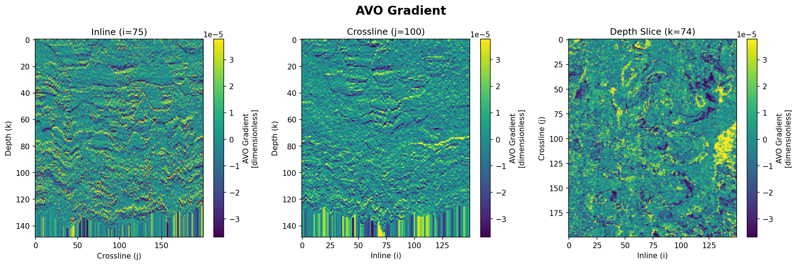
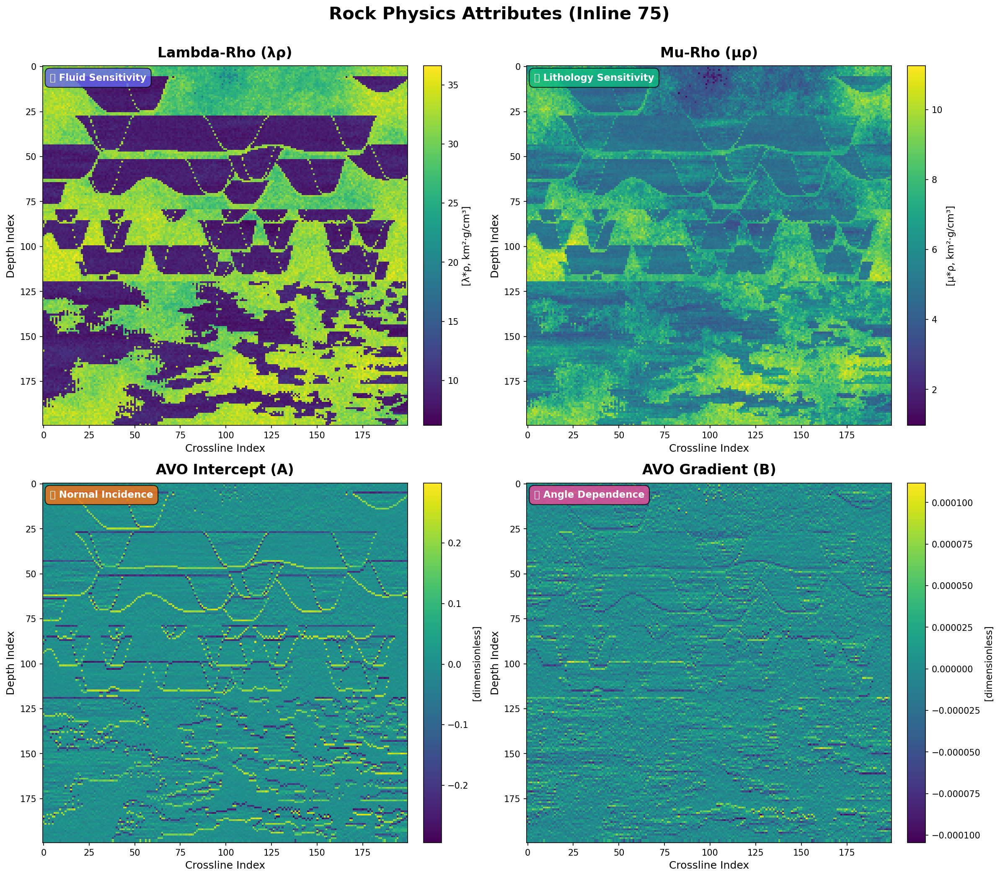

Comprehensive analysis of AVO seismic forward modeling and rock physics
attributes for the Stanford VI-E synthetic reservoir dataset, featuring time-lapse monitoring capabilities
and multi-angle seismic response.
Grid Size
150×200×200
Angle Stacks
4 Angles
Domains
Depth & Time
Data Points
6M+
Stanford VI-E Dataset Overview
The Stanford VI-E dataset is a large-scale synthetic 3D geological model (6
million cells) representing a three-layer prograding fluvial channel system within an asymmetric anticline
structure. Developed by the Stanford Center for Reservoir Forecasting (SCRF), this enhanced version extends
the original Stanford VI reservoir by incorporating electrical resistivity (via Archie's method and
Waxman-Smits model), improved rock physics models (Constant Cement Model with Gassmann fluid substitution),
and realistic flow simulation results. The dataset is specifically designed for testing joint
seismic-electromagnetic time-lapse monitoring algorithms and provides exhaustive point-scale data without
filtering or smoothing, enabling flexible forward modeling approaches.
Properties
3
Grid Cells
6M
Layers
3
Resolution
25 m
Dataset Characteristics
The Stanford VI-E model provides high-resolution 3D volumes (150×200×200 cells; 25m
horizontal × 1m vertical resolution) of fundamental rock properties at the geostatistical scale (point
scale) without filtering or smoothing. The structure corresponds to an asymmetric anticline with axis N15°E
and maximum dip of 8°, ranging from ~2,500m to 2,730m depth. The three-layer stratigraphy includes deltaic
deposits (80m), meandering channels (40m), and sinuous channels (80m) with facies including floodplain
(shale), point bars, channels (sand), and boundary deposits. This exhaustive dataset offers flexibility for
various forward modeling methods:
Primary
Properties
Vp
P-wave Velocity
Compressional wave velocity (km/s)
Computed using Constant Cement Model with
Gassmann fluid substitution
Vs
S-wave Velocity
Shear wave velocity (km/s)
Derived from Greenberg-Castagna relations for
shaly sands
ρ
Density
Bulk density (g/cm³)
Volumetric average with 0.5% random
variability
Derived
Properties Available
Acoustic Impedance (AI)
Shear Impedance (SI)
Elastic Impedance (EI)
Lamé's Parameters (λ, μ)
Poisson's Ratio (ν)
Electrical Resistivity
Beyond the static geological framework and primary
petrophysicalproperties, the Stanford VI-E dataset uniquely incorporates dynamic reservoir behavior through
time-lapse (4D)simulation capabilities. This temporal dimension enables investigation of production-induced
changes in fluiddistribution, elastic properties, and electromagnetic responses—essential for testing and
validating 4Dmonitoring algorithms and time-lapse interpretation workflows.
Time-Lapse Capabilities
The dataset includes time-lapse (4D) monitoring capabilities with flow simulation results
(ECLIPSE) showing changes in fluid saturation, elastic properties, and electrical resistivity during oil
production. Initial conditions assume sand facies are oil-saturated (Soil=0.85,
Sbrine=0.15) while shale facies are fully brine-saturated (Sbrine=1.0). The
permeability model was modified (shale permeability reduced by factor of 100) to create realistic flow
behavior where hydrocarbons flow primarily through sandstones. All elastic and electromagnetic properties
are recomputed at different production time steps using improved rock physics relationships:
Flow Simulator
ECLIPSE
Commercial reservoir flow simulation software
Production Scenario
Oil Recovery
From initially oil-saturated sands (Soil = 0.85)
Monitoring
Time Steps
Multiple snapshots during production cycle
Applications
Multi-Method
4D seismic, EM monitoring, joint inversion
Dataset Overview
The Stanford VI-E dataset provides a comprehensive synthetic reservoir model designedfor
advanced geophysical research and algorithm development. This section introduces the dataset's
origin,evolution, and key enhancements that distinguish it from the original Stanford VI model. Understanding
thedataset's provenance and design philosophy is essential for effective utilization in seismic
interpretation,rock physics analysis, and reservoir characterization workflows.
Dataset Provenance
The Stanford VI-E reservoir model represents an enhanced evolution of the original Stanford VI synthetic
dataset created by Castro et al. (2005) at Stanford's Center for Reservoir Forecasting (SCRF). This
comprehensive enhancement integrates advanced rock physics modeling, seismic forward modeling, and modern
visualization techniques to provide a state-of-the-art platform for reservoir characterization studies and
algorithm validation.
Original Dataset
Stanford VI Reservoir
CREATED BY
Castro et al. (2005)
INSTITUTION
Stanford SCRF
Enhanced Version
Stanford VI-E Reservoir
AUTHORS
Jaehoon Lee & Tapan Mukerji
DEPARTMENT
Energy Resources Engineering
PURPOSE
Joint Seismic-EM Monitoring
Key Improvements
Enhanced rock physics models: P-wave velocity using Constant
Cement Model (Avseth et al., 2000) with Gassmann fluid substitution; S-wave velocity from
Greenberg-Castagna relations for shaly sands
Addition of electrical resistivity: Archie's method (1942) for
sand facies and Waxman-Smits model (1968) for shaly-sand facies, enabling electromagnetic
monitoring simulations
Modified permeability model: shale permeability reduced by
factor of 100 to create realistic flow behavior (hydrocarbon flow primarily through
sandstones, with shale acting as barrier)
Improved 4D modeling workflow: flow simulation (ECLIPSE)
provides time-dependent saturation changes; elastic and EM properties recalculated at each
time step for realistic time-lapse response
Maintained point-scale resolution: porosity simulated using
SGSIM (Sequential Gaussian Simulation); facies modeled with SBED and SNESIM (multiple-point
statistics); all data provided without upscaling or filtering
Suggested Citation: Lee, J. and
Mukerji, T.,
2012, "The Stanford VI-E reservoir: A synthetic data set for joint seismic-EM time-lapse monitoring
algorithms": 25th Annual Report, Stanford Center for Reservoir Forecasting, Stanford University,
Stanford, CA.
Original Stanford VI: Castro, S., Caers, J., and
Mukerji, T., 2005, "The Stanford VI reservoir": 18th Annual Report, Stanford Center for Reservoir
Forecasting, Stanford University.
Having established the dataset's provenance and
methodologicalfoundations, we now turn to the detailed technical specifications that define the grid
architecture, spatialresolution, and structural framework of the Stanford VI-E model. These specifications are
critical forunderstanding data organization, coordinate system conventions, and computational requirements for
geophysicalmodeling workflows.
Technical Specifications
The Stanford VI-E reservoir model is built on a high-resolution 3D Cartesian
grid designed to capture fine-scale geological heterogeneity while maintaining computational tractability
for forward modeling applications. The grid specifications balance spatial resolution requirements for
accurate seismic and electromagnetic simulation with practical considerations for data storage and
processing. Understanding these technical parameters is essential for proper data handling, coordinate
system conversions, and integration with geophysical modeling workflows.
3D Grid Model
Grid Specifications
X Dimension (Inline)
150 cells
25 m spacing = 3.75 km extent
Y Dimension (Crossline)
200 cells
25 m spacing = 5.0 km extent
Z Dimension (Depth)
200 cells
1 m spacing = 200 m thickness
Total Grid Cells
6,000,000
150 × 200 × 200 cells
Cell Volume
625 m³
25 m × 25 m × 1 m
Depth Range
Top Depth
2,500 m
Base Depth
2,700 m
Total Thickness
200 m
Structural Configuration
Anticline Axis
N15°E orientation
Maximum Dip
8° (asymmetric)
Storage & Memory Considerations:
Single property volume: ~24 MB (float32) or ~48 MB (float64)
Complete dataset: ~300-600 MB depending on precision
Recommended RAM: 8+ GB for full-volume processing
Coordinate system: Local Cartesian (origin at model corner)
File format: GSLIB ASCII for easy import/export
HORIZONTAL EXTENT
3.75 km × 5.0 km
VERTICAL SAMPLING
1.0 m (depth domain)
CELL VOLUME
625 m³ per cell
With a comprehensive understanding of the technicalspecifications and
data architecture, we now explore the diverse application domains where the Stanford VI-Edataset provides
significant value. The combination of controlled synthetic data, known ground truth, andmulti-physics
responses makes this dataset particularly well-suited for algorithm development, methodologicalvalidation, and
educational applications across geophysical and data science disciplines.
Use Cases & Applications
The Stanford VI-E dataset serves as a versatile platform for developing,
testing, and validating geophysical algorithms and interpretation workflows. The availability of ground
truth data at multiple scales—from point-scale petrophysical properties to seismic-scale responses—enables
comprehensive validation of forward modeling, inversion, and integration methodologies. This section
highlights the primary application domains where the dataset provides maximum value for research and
industrial development.
Geophysical
Methods
01
Seismic Inversion
Algorithm Testing & Validation
Test deterministic and stochastic inversion algorithms
Validate AVO inversion and elastic parameter estimation
Benchmark pre-stack and post-stack inversion methods
Quantify inversion uncertainty with known ground truth
02
Forward Modeling
Synthetic Seismic Generation
Test convolutional and full-waveform modeling
Generate angle-dependent synthetic seismograms
Validate modeling engines and algorithms
Study resolution and detectability limits
Rock
Physics &
Characterization
03
Rock Physics Modeling
Theoretical Validation
Validate rock physics models (CCM, Soft Sand, etc.)
Test fluid substitution algorithms (Gassmann)
Evaluate velocity-porosity relationships
Calibrate empirical relations for shaly sands
04
Time-Lapse Monitoring
4D Seismic & EM
Test 4D seismic processing and inversion workflows
Validate time-lapse difference analysis methods
Develop electromagnetic monitoring algorithms
Test joint seismic-EM inversion approaches
Data
Science &
Education
05
Machine Learning
Training & Testing Data
Generate labeled training data for supervised learning
Test facies classification and lithology prediction
Teach rock physics and seismic petrophysics concepts
Demonstrate AVO analysis and interpretation workflows
Provide realistic datasets for student projects
Illustrate integration of geology and geophysics
Key Advantages for Research:
Known Ground Truth: Complete access to "true" subsurface properties enables rigorous
algorithm validation
Multi-Scale Data: Point-scale properties to seismic-scale responses allow
scale-dependent analysis
Realistic Complexity: Geological heterogeneity mirrors real reservoir complexity
without acquisition noise
Flexible Forward Modeling: Users can generate custom seismic/EM data with different
parameters
Time-Lapse Capability: Production scenarios enable testing of 4D monitoring workflows
Original Property Volumes
This section presents comprehensive 3D visualizations of the fundamental rock
physicsproperties that constitute the Stanford VI-E reservoir model. The three primary elastic
parameters—P-wavevelocity (Vp), S-wave velocity (Vs), and bulk density (ρ)—form the essential input for
seismic forwardmodeling and AVO analysis. These property volumes capture the complete spatial distribution of
elasticcharacteristics throughout the reservoir, reflecting the complex interplay between lithology, porosity,
fluidsaturation, and structural configuration. The high-resolution 3D representations enable detailed
examinationof property variations, facies boundaries, and fluid contacts that control seismic response.
Interactivevisualizations facilitate intuitive exploration of the data through real-time manipulation of
viewing angles,opacity controls, and customizable color scales, providing unprecedented insight into the
reservoir'sheterogeneous nature.
P-wave Velocity (Vp)
P-wave (compressional wave) velocity represents the speed at which acoustic
wavespropagate through the reservoir rock. This fundamental elastic property ranges from approximately 2,000
m/s inlow-velocity shales to over 4,000 m/s in consolidated sands, directly reflecting variations in
lithology,porosity, and fluid content. The Vp volume was computed using the Constant Cement Model (Avseth et
al., 2000)for sand facies and empirical relations for shale facies, incorporating Gassmann fluid substitution
to accountfor partial oil saturation effects. Lateral and vertical velocity contrasts visible in the 3D
volumecorrespond to facies boundaries and fluid contacts, which generate the seismic reflections observed in
AVOforward modeling.

Figure 4. P-wave velocity
distribution showing three orthogonal slices through the 3D volume. Colormap: Viridis.
S-wave Velocity (Vs)
S-wave (shear wave) velocity characterizes the propagation speed of
sheardeformations through the rock matrix. Unlike P-waves, S-waves travel only through the solid rock
framework andare insensitive to pore fluids, making Vs a critical diagnostic parameter for lithology
discrimination andfluid identification. Values range from approximately 1,000 m/s in shales to 2,500 m/s in
cemented sands. TheVs volume was derived using Greenberg-Castagna (1992) empirical relations for shaly sands,
which establishrobust correlations between Vp and Vs based on clay content. The Vp/Vs ratio, computed from
these volumes,serves as a key fluid indicator in AVO analysis, with elevated ratios typically indicating
gas-bearing sandsand reduced ratios characterizing brine-saturated or oil-saturated zones.

Figure 2. S-wave velocity
distribution showing three orthogonal slices through the 3D volume. Colormap: Plasma.
Density (Rho)
Bulk density (ρ) represents the total mass per unit volume of the reservoir
rock,integrating contributions from the mineral matrix, pore fluids, and void space. Density values range
fromapproximately 2.0 g/cm³ in high-porosity, fluid-saturated sands to 2.6 g/cm³ in low-porosity shales.
Thisproperty plays a crucial role in seismic impedance calculations (Z = ρ × Vp) and governs
reflectioncoefficients at lithologic and fluid boundaries. The density volume was computed using volumetric
mixing lawsthat combine mineral densities (quartz, feldspar, clay) with in-situ fluid properties (brine and
oil atreservoir conditions). Density variations correlate strongly with porosity changes and fluid
substitutioneffects, making this volume essential for accurate AVO modeling and quantitative seismic
interpretation ofamplitude anomalies.

Figure 3. Density distribution
showing three orthogonal slices through the 3D volume. Colormap: RdYlBu_r.
Reservoir Model Description
This section details the geological and petrophysical characteristics of the
StanfordVI-E reservoir model. The model captures realistic subsurface heterogeneity through its
structuralconfiguration, stratigraphic architecture, facies distribution, and petrophysical property
variations. Theseelements combine to create a geologically plausible synthetic reservoir that serves as an
ideal testbed forseismic forward modeling, inversion algorithms, and reservoir characterization methodologies.
Geological Structure
The reservoir exhibits a classical asymmetric anticline structure oriented N15°E, representing a typical
structural trap for hydrocarbon accumulation. The fold demonstrates pronounced structural asymmetry with a
gentle western flank (dip angle 30°) transitioning to a steeper eastern flank (dip angle 60°), creating
significant structural closure. The crest of the anticline reaches approximately 100m above the base level,
providing substantial vertical relief for fluid segregation and trap integrity.
Structure Type
Asymmetric Anticline
Classical oil trap formation
AXIS ORIENTATION
N15°E
MAXIMUM DIP
8°
DEPOSITIONAL ENVIRONMENT
Prograding Fluvial
Channel System
Stratigraphic Layers
1
Sinuous Channels
Top layer
80 m
2
Meandering Channels
Middle layer
40 m
3
Deltaic Deposits
Bottom layer
80 m
While the structural framework provides the large-scalegeometric
context, the internal reservoir architecture is controlled by depositional facies distribution.
Thestratigraphic organization reflects a progradational deltaic-fluvial system that evolved through
multipledepositional episodes, creating distinct layers with contrasting lithologic properties and
flowcharacteristics. Understanding this facies architecture is fundamental to interpreting seismic
amplitudepatterns and predicting reservoir connectivity.
Facies Distribution
The reservoir model incorporates four distinct depositional layers representing a complete deltaic-fluvial
sequence. Layers 1 and 2 feature meandering and sinuous channel systems with sand-filled channels embedded
in shale floodplain deposits. Layer 3 represents deltaic deposits with distributary channels and mouth bars.
Layer 4 captures the marine shale cap rock. This realistic facies architecture, validated against modern
deltaic systems, exhibits strong vertical and lateral heterogeneity critical for reservoir performance
prediction.
Layer 1 & 2
Meandering and Sinuous Channels
Floodplain
Shale deposits
SHALE
Point Bar
Sand deposits along convex inner edges of meanders
SAND
Channel
Sand deposits
SAND
Boundary
Shale deposits
SHALE
Layer 3
Deltaic Deposits
Floodplain
Shale deposits
SHALE
Channel
Sand deposits
SAND
The facies framework establishes the geological context, butaccurate
seismic modeling requires detailed specification of petrophysical properties within each facies type.These
properties—including mineralogy, porosity, clay content, and fluid saturation—directly control elasticbehavior
and determine the rock physics relationships necessary for converting geological models intosynthetic seismic
data. The Stanford VI-E dataset provides comprehensive petrophysical characterization withrealistic property
ranges calibrated to analog reservoir systems.
Petrophysical Properties
Petrophysical properties are defined with high fidelity using realistic mineral compositions and fluid
properties. Sand facies exhibit porosity ranging from 18-32% with variable water saturation (20-100%), while
shale facies show lower porosity (5-15%) and higher clay content (40-60%). Mineral compositions are derived
using Voigt-Reuss-Hill averaging for accurate elastic properties. The model incorporates realistic brine
salinity (35,000 ppm), oil gravity (35° API), and in-situ fluid properties at reservoir conditions (2000m
depth, 68°C temperature, 20 MPa pressure).
Mineral Composition
Voigt-Reuss-Hill averaging
Sand
Facies
Quartz65-70%
Feldspar20%
Rock fragments10-15%
Shale
Facies
Clay85-90%
Quartz10-15%
Fluid Properties
At 20 MPa, 85°C (Batzle-Wang relations)
Brine
Density (ρ)0.99 g/cm³
Bulk modulus (K)2.57 GPa
Salinity (NaCl)20,000 ppm
Oil
Density (ρ)0.70 g/cm³
Bulk modulus (K)0.50 GPa
API Gravity25°
GOR200
L/L
Initial Saturation State
Before production simulation
Sand
Facies
OIL-SATURATED
Sbrine0.15
Soil0.85
Shale
Facies
FULLY BRINE-SATURATED
Sbrine1.0
Rock Physics & Elastic Properties
Rock physics modeling forms the critical bridge between geological and
geophysicaldomains in the Stanford VI-E dataset. This section describes the theoretical frameworks and
empiricalrelationships used to transform petrophysical properties (porosity, saturation, mineralogy) into
elasticparameters (velocities, impedances, moduli) required for seismic forward modeling. The implementation
employsindustry-standard models calibrated for clastic reservoirs, ensuring realistic seismic responses that
honorfundamental rock physics principles.
Rock Physics Models
Advanced rock physics modeling transforms petrophysical properties into elastic attributes for seismic
forward modeling. Sand facies utilize the Constant Cement Model (Avseth et al., 2000) with critical porosity
φc = 0.38, 1% calcite cement, and coordination number n = 9, calibrated for poorly-cemented sandstones.
Shale properties are computed using the modified Xu-White model incorporating clay minerals, silt, and pore
fluids. S-wave velocities are derived from Greenberg-Castagna (1992) empirical relations. Fluid substitution
follows Gassmann's equations with Wood's formula for fluid mixing, enabling accurate modeling of partial
saturation effects and fluid contacts.
Velocity Models
Seismic property transformations
SAND FACIES
Constant Cement Model
Avseth et al. (2000) - Theoretical model
for
poorly-cemented sandstones
CRITICAL POROSITY
φc = 0.38
CEMENT
1% Calcite
COORDINATION
n = 9
Resistivity Models
Electrical property transformations
Archie's Method
1942
FOR SAND FACIES
Clean sandstones
Waxman-Smits Model
1968
FOR SHALE FACIES
Shaly sands with clay content
Data Visualization & Access
Effective data exploration and analysis require robust visualization tools andaccessible
data formats. This section outlines the visualization strategies implemented for the Stanford VI-Edataset,
ranging from publication-ready static images to interactive 3D volume rendering. The dual approachensures
compatibility with diverse user requirements, from quick qualitative assessment to detailedquantitative
analysis, while maintaining high standards for scientific visualization and reproducibility.
Visualization Methods
The dataset provides comprehensive visualization capabilities through two complementary
approaches. Static 2D views offer high-resolution PNG images (1.5-1.6 MB each) displaying three orthogonal
slices (inline, crossline, depth) with professional color scales and annotations, ideal for publication and
detailed analysis. Interactive 3D visualizations leverage modern WebGL technology through Plotly.js,
enabling real-time volume rendering, opacity control, custom color mapping, and dynamic slice positioning.
This dual approach balances accessibility, performance, and analytical depth for diverse user needs and
computational environments.
2D Static Views
High-quality images
Format
PNG images (~1.5-1.6 MB each)
Content
Three orthogonal slices (inline, crossline, depth)
Tool
Matplotlib with custom colormaps
Publication-ready quality
3D Interactive Views
Dynamic exploration
Format
HTML with embedded Plotly (~6.2 MB each)
Content
Interactive 3D surface slices with rotation/zoom
controls
Tool
Plotly with WebGL rendering
Real-time data exploration
Implementation & Usage
The Stanford VI-E dataset is distributed with a comprehensive
Python-based toolkit
fordata processing, visualization, and analysis. This section provides practical guidance for working with
thedataset, including command-line interfaces, scripting examples, and workflow recommendations. The modular
codearchitecture supports both quick-start visualization tasks and advanced customization for
researchapplications, with clear documentation and example workflows to facilitate rapid adoption.
Running the Code
The visualization workflow provides several tools for quality control
and interpretation. You can generate static 3D orthogonal slice visualizations using the
plot_3d_slices tool, which is ideal for standard cross-sectional analysis. For more dynamic
exploration, the plot_3d_interactive tool launches a fully interactive 3D viewer, allowing
for rotation and zooming of the data volume. A separate command is also available to plot the original
input properties — such as Vp, Vs, density, and facies — providing a crucial baseline for comparison against
the newly computed attributes.
# Generate 3D orthogonal slice visualizationspython-msrc--run-tool plot_3d_slices
# Generate 3D interactive visualizationspython-msrc--run-tool plot_3d_interactive
# Plot original properties (Vp, Vs, density, facies)python-msrc--run-tool plot_original_properties
AVO Seismic Analysis Overview
Angle-dependent (AVO) synthetic seismograms from the Stanford VI-E model.
Inspect how reflection amplitudes change with incidence angle, switch between time and depth domains, and
use the interactive viewers to compare stacks, extract attributes, or export figures for analysis and
reporting.
Angle Stacks
4
Max Angle
30°
Domains
2
Wavelet
Ricker
What is AVO?
AVO (Amplitude Variation with Offset) studies how seismic reflection
amplitudes vary with incidence angle. Contrasting angle stacks helps distinguish lithology-related signals
from fluid- or porosity-driven amplitude changes — a standard diagnostic in reservoir analysis.
Workflow summary: compute elastic attributes from the model,
deriveangle-dependent reflectivity (Aki‑Richards / Zoeppritz), convolve with a Ricker wavelet, and produce
time &depth seismograms. Use the domain selector and interactive viewers to inspect, compare, and export
results.
Analysis Components
Core pipeline elements:
4 Angle Stacks
Stacks at 0°, 15°, 22.5° and 30° incidence
Three Elastic Properties
Vp, Vs and density (ρ) as modeling inputs
Zoeppritz Equations
Linearized Zoeppritz (Aki‑Richards) reflectivity
Ricker Wavelet (30 Hz)
Zero‑phase Ricker wavelet (default broadband)
Dual Domain Processing
Outputs in depth (1 m sampling) and time (2 ms sampling)
Combined Full Stack
Composite full‑stack volume combining all angles
Study Parameters
Dataset
Stanford VI-E synthetic reservoir model Grid: cells (6 million voxels) Resolution: Properties: , facies, fluid saturation
Analysis Domains
Depth domain (z): True geological coordinates, optimal for rock
property discrimination Time domain (TWT): Seismic acquisition coordinates,
standard for interpretation workflows
Methodology
Physics-Based: Zoeppritz equations with Aki-Richards
linearization for angle-dependent reflectivity Wavelet: 25 Hz Ricker wavelet
convolved with reflectivity series Angles: Four angle stacks at 0°, 15°, 22.5°,
and 30°
Objective
Generate angle-dependent seismic volumes for facies discrimination and
reservoir characterization, leveraging amplitude variation with offset to enhance lithology
and fluid identification
Select Analysis Domain
Currently Viewing: Depth Domain — depth-domain seismograms (200
samples, 0–199 m) aligned with rock-physics attributes for geological interpretation. Switch to Time
Domain to view two-way travel-time (TWT) seismograms (149 samples, 0–148 ms).
AVO Analysis Characteristics
Quick tips: start with the full-stack to identify
majorstructural features, then compare individual angle stacks to find zones where amplitude changes with
offset.Use the domain selector to switch between depth-aligned rock-physics comparisons and time-domain TWT
views forprocessing-style checks. Export angle stacks or attribute extracts for quantitative testing
andmachine-learning experiments.
Full-Stack AVO Seismogram
AVO produces angle-dependent seismic volumes that highlight elastic-response changes with offset.
Comparing stacks improves the separation of lithology- and fluid-related amplitude signals and supports
quantitative attribute extraction.
Physics-based — reflectivity computed from elastic inputs
Proven — widely used in industry
Dual-domain — outputs in both time and depth
Methodology
The workflow computes reflectivity from elastic inputs,applies a
Ricker wavelet, and produces analysis-ready synthetic volumes in both time and depth forinterpretation,
attribute extraction, and method validation.
Dual-Domain Workflow
New in this implementation: The pipeline now generates
seismograms in BOTH time and depth domains
1Depth → Time
Convert rock properties (Vp, Vs, Rho) to time domain using TWT integration
2AVO Modeling
Generate angle-dependent seismograms in time domain (industry standard)
3Time → Depth
Convert seismograms BACK to depth domain for geological analysis
Result:
Both avo_time_*.npz
(149 time samples) and avo_depth_*.npz (200 depth layers) are
cached, with perfect alignment between depth seismograms and rock physics attributes!
What is AVO?
AVO (Amplitude Variation with Offset) is the industry-standard technique used by oil
companies worldwide. It analyzes how seismic reflections change when viewed from different angles.
Real-world analogy: Like looking at a lake from different angles - the reflection
changes based on your viewing position. These changes tell us about what's beneath the surface.
Why it works: Gas-filled rocks and water-filled rocks reflect seismic waves differently
at different angles, allowing us to detect hydrocarbons.
Amplitude Variation with Offset (AVO) modeling computesangle-dependent
reflectivity at multiple incident angles (0°, 15°, 22.5°, and 30°) using the Zoeppritz
equations. The approach exploits amplitude variations to infer lithology and fluid properties,
withthe full-stack seismogram generated by combining all angle gathers into a composite trace.
Mathematical Framework
This section provides comprehensive technical specifications and implementation details for the AVO
seismicmodeling workflow, including parameter configurations, computational methods, and practical guidance
forreproducing and extending the analysis.
The mathematical foundation underlying AVO analysis quantifies how elastic properties influence
seismicreflections at different angles, enabling the extraction of diagnostic attributes for
reservoircharacterization.
Based on the
Aki-Richards linearization of Zoeppritz equations for P-wave reflectioncoefficients:
Understanding the Formula
Aki-Richards Approximation simplifies the complex Zoeppritz equations into a linear
relationship between reflection amplitude and angle. Think of it as breaking down seismic reflections into
two components:
R₀ (Intercept): The reflection strength when looking straight down (0° angle) -
tells us about basic rock contrasts
G (Gradient): How much the reflection changes as the angle increases - the key to
detecting fluids like gas or oil
The term means changes are more dramatic at larger angles, which is why far-offset data is valuable
for fluid detection.
Aki-Richards Approximation
= intercept (normal incidence reflectivity)
= gradient (AVO gradient)
= incident angle
The table below summarizes the practical strengths and known
limitations of the Aki‑Richards / AVO approach as applied to the Stanford VI‑E synthetic dataset. Use this
comparison to guide interpretation priorities and to understand where supplemental data or additional modeling
may be required.
Strengths
Industry-standard technique
Physically rigorous (Zoeppritz equations)
Multiple angles provide fluid sensitivity
Well-understood interpretation workflow
Quality weighting optimization implemented
Limitations
Moderate facies discrimination (Cohen's )
Poor gradient correlation (Pearson )
Requires accurate velocity model
Computational complexity (4 angle volumes)
Sensitive to linearization assumptions
Seismic Data Products
A complete collection of multi‑angle synthetic seismic volumes in
both
time and depth domains, built foradvanced AVO interpretation and reservoir characterization workflows.
The Stanford VI‑E release provides physics‑based synthetic seismic
products generated with rigorous AVO forwardmodeling. Available items include a full‑stack volume plus four
angle
stacks (0°, 15°, 22.5°, 30°),supplied in both two‑way travel time (TWT) and depth coordinates. These
multi‑angle
volumes preserveamplitude‑versus‑offset behavior required for fluid detection, lithology discrimination,
attribute
extraction, andquantitative interpretation. Each product includes technical metadata and interpretive notes to
support reproducibleanalysis and method testing.
Full-Stack AVO Seismogram — the structural baseline
The full‑stack seismogram is a quality‑weighted integration of
all angle contributions (0–30°) that producesthe familiar post‑stack image used for structural interpretation.
The full‑stack emphasizes strong impedance contrasts at major
lithologic boundaries while suppressingangle‑dependent variability, making it an ideal first look at reservoir
geometry. Inline, crossline andtime/depth slices expose anticlinal structure, layer continuity and internal
heterogeneity. Use thefull‑stack as the reference baseline when comparing individual angle stacks or
extracting AVO
attributes.
Figure 4. Full-Stack AVO Seismogram - Integrated view combining
all
angle stacks (inline, crossline, and time slices)
Individual Angle Stacks
Four angle-specific seismic volumes (0°, 15°, 22.5°, 30°) that
isolate how reflection amplitudes change withoffset, enabling focused AVO analysis and improved sensitivity to
fluids and lithology.
Each angle stack is computed from the model using a linearized Zoeppritz formulation (Aki‑Richards)
andemphasizes
different physical responses. Near‑offset stacks (0–15°) are dominated by acoustic impedancecontrasts and
provide
the best structural image; mid‑to‑far offsets (22.5–30°) increase sensitivity toPoisson’s‑ratio and fluid
effects.
Comparing stacks across angles enables extraction of AVO attributes(intercept, gradient) for quantitative
interpretation. Both time‑domain (TWT) and depth representations areavailable to support velocity‑aware
analysis and
direct comparison with rock‑physics attributes.
Figure 5. Angle Stack at 0° (Near Offset) - Normal incidence
reflections
Figure 7. Angle Stack at 22.5° - Enhanced fluid sensitivity
Figure 8. Angle Stack at 30° (Far Offset) - Maximum AVO response
Technical Analysis
Quantitative interpretation of the synthetic seismograms,
focusing on amplitude behaviour, AVO signatures and quality metrics in both depth and time domains to assess
fidelity and diagnostic value.
Figure 4 shows the full‑stack AVO seismogram produced by a
quality‑weighted integration of four angle‑dependent reflection responses (0°, 15°, 22.5°, 30°) computed
with a
linearized Zoeppritz formulation (Aki‑Richards). Angle weights derived from inversion performance (w0° =
0.90;
w15° = 1.00; w22.5° = 0.85; w30° = 0.70) emphasize near‑to‑mid incidence (θ < 30°) where linearization
is
most reliable. Each angle's reflectivity is computed, vectorized, and convolved with a 25 Hz Ricker
wavelet to
produce broadband synthetic seismograms.
Mapped across the Stanford‑VI‑E grid (150 × 200 × 200
samples, 1
m vertical resolution), amplitude maps highlight P‑wave impedance contrasts modulated by angle‑dependent
coefficients. Visualizations use divergent colormaps (warm = positive, cool = negative). Quantitative
checks
indicate limited discrimination by gradient amplitude alone: Pearson r ≈ 0.003 (near zero) and Cohen's d ≈
0.474
(small effect size), so gradient amplitude by itself is a weak predictor of facies.
This limitation reflects P‑wave AVO's two‑parameter
sensitivity
(Vp, ρ) and its weak sensitivity to Vs variations that often indicate fluids or lithology changes.
Angle‑dependent noise also affects results: near‑offset (0°) shows σ ≈ 0.011 while the 15° stack achieves
σ ≈
0.002 (≈5.5× lower). The 0–15° offset range therefore yields substantially better correlation (≈2.6×) than
including extended offsets (30–45°), where Aki‑Richards linearization errors grow and can exceed
measurement
noise.
The full‑stack can be transformed to two‑way travel time (TWT) by
integrating 1/Vp(z): The conversion uses nearest‑neighbor resampling to a 2 ms grid (148 time samples) to preserve
sharp
stratigraphic boundaries. Each angle's reflectivity is convolved and stacked in the time domain to produce
a
processing‑style seismogram.
Time‑domain images introduce kinematic artifacts where lateral
velocity variations (≈2000–3500 m/s) can
produce apparent vertical shifts: high‑velocity zones are pulled up and low‑velocity zones pushed down.
These
effects introduce positional uncertainties on the order of ±5–10 m for facies boundaries and complicate
direct
geological interpretation, even though amplitudes are preserved.
Overall discrimination limits persist in both domains:
gradient
correlation (r ≈ 0.003) is negligible
and
Cohen's d (≈0.474) remains small. This reflects the intrinsic two‑parameter nature of conventional P‑wave
AVO
(Vp, ρ). For improved facies separation consider integrating Vs‑sensitive measurements, multicomponent
data, or
joint rock‑physics constraints with supervised approaches.
Implementation & Usage
This section provides comprehensive technical specifications
and
implementation details for the AVO seismicmodeling workflow, including parameter configurations, computational
methods, and practical guidance forreproducing and extending the analysis.
Technical Implementation Details
This AVO analysis is based on a comprehensive seismic modeling
configuration, starting with a detailed Grid Configuration. The model volume is defined by a 150x200x200 grid,
which is finely sampled at 1 meter in depth (dz = 1 m) and 1 millisecond in time (dt = 1 ms). This
dual-sampling provides high resolution for both the geological model and the resulting seismic data.
Key Seismic Parameters are used to generate the response. A standard 25 Hz Ricker wavelet serves as the source
signal. The AVO response is modeled across a set of four discrete incidence angles: 0°, 15°, 22.5°, and 30°,
enabling a robust analysis of angle-dependent reflectivity.
Grid Configuration
Grid Size150 × 200 × 200
Depth Samplingdz = 1 m
Time Samplingdt = 1 ms
Seismic Parameters
Wavelet25 Hz Ricker
Angles0°, 15°, 22.5°, 30°
Runtime~15 seconds
The core Methodology relies on the Aki-Richards linearization of the Zoeppritz equations, a standard and
efficient industry approach for calculating reflectivity. The resulting angle gathers are then combined
using
full-stack integration to create the final volumes.
The Processing Workflow is designed for flexibility, featuring a bidirectional Depth-Time-Depth domain
conversion. This allows the pipeline to generate dual seismogram outputs in both time and depth. Notably,
the
entire modeling process is highly efficient, completing in approximately 15 seconds.
Methodology
MethodAki-Richards linearization of Zoeppritz equations
StackingFull-stack integration of angle gathers
Processing Workflow
Domain ConversionDepth → Time → Depth (bidirectional)
Dual-Domain OutputGenerates both time and depth seismograms
Running the Code
To generate the AVO seismic volumes, run the primary modeling pipeline
using the command
python -m src --run-tool seismograms, which creates outputs in both the time and depth domains.
For a complete workflow that also includes generating the corresponding visualizations, execute
python -m src --run-tool analysis_seismograms. As a subsequent step, you can specifically analyze
the correlation between the resulting seismic data and the geological facies by running
python -m src --run-tool analyze_facies_correlation.
Generate AVO seismic volumes in both time and depth domains:
# Run AVO modeling pipeline (generates both domains)python-msrc--run-tool seismograms
# Complete seismic analysis with visualizations (both domains)python-msrc--run-tool analysis_seismograms
# Analyze facies-seismic correlationpython-msrc--run-tool analyze_facies_correlation
Rock Physics Attributes Overview
Derived rock physics attributes provide direct insight into elastic and AVO
properties. These attributes are computed from the fundamental elastic parameters (Vp, Vs, density) and
represent key quantities for seismic interpretation and reservoir characterization.
Attributes
4
Cohen's d
14.05
Huge Effects
2
Angles
4
Attribute Definitions
Rock physics attributes link elastic properties to geological and fluid characteristics. All attributes
are
derived from the fundamental elastic parameters (Vp, Vs, ρ) using established rock physics relationships:
Impedance Attributes
Acoustic Impedance (AI)AI = ρ · Vp
Primary indicator of lithology and porosity
Shear Impedance (SI)SI = ρ · Vs
Sensitive to rock frame and lithology changes
Elastic Impedance (EI)
Angle-dependent impedance combining P-wave and S-wave information
Lamé Parameters
Lambda-Rho
(λρ)λρ = ρ(Vp² - 2Vs²)
First Lamé parameter times density, highly sensitive to fluid content
Mu-Rho (μρ)μρ = ρVs²
Shear modulus times density, indicates rock rigidity and lithology
AVO (Amplitude Versus Offset) attributes measure how seismic
reflection amplitudes change with incidence angle. Intercept (A) captures the zero-offset reflection strength
related to acoustic impedance contrast, while Gradient (B) describes the angular dependence often sensitive to
elastic contrasts such as Poisson's ratio and fluid effects. Together, these attributes help discriminate
lithology and fluids by separating impedance-driven amplitude from angle-dependent elastic responses.
AVO Attributes
Aki-Richards Approximation
Intercept (A)
Zero-offset
Zero-offset reflection coefficient proportional to acoustic impedance
contrast
Gradient (B)
Angular response
Rate of reflectivity change with angle, sensitive to Poisson's ratio
contrast
Poisson's ratio and the Vp/Vs ratio are complementary elastic
diagnostics: Poisson's ratio is sensitive to the relative compressibility of the rock matrix and pore fluids,
while Vp/Vs highlights lithology and saturation contrasts. Together they improve discrimination between gas,
oil, and brine-bearing rocks and help reduce ambiguities present when using single attributes alone.
Additional Properties
Poisson's Ratio (ν)ν = (Vp²-2Vs²) / [2(Vp²-Vs²)]
Indicates fluid type and saturation
Vp/Vs Ratio
Diagnostic for lithology and fluid discrimination
With the physical interpretation and diagnostic applications of
these rock physics attributes established, we now turn to the technical implementation details. Understanding
the
computation methods, mathematical formulations, and algorithmic workflows is essential for reproducibility,
quality assurance, and proper interpretation of the attribute volumes derived from the fundamental elastic
properties.
Computation Methods
Rock physics attribute volumes are computed through systematic application of
well-established theoretical models and empirical relationships. This section details the mathematical
frameworks, physical assumptions, and computational workflows used to derive each attribute from the
fundamental
elastic properties. Understanding these methodologies is essential for proper interpretation of attribute
responses, sensitivity analysis, and quality control of derived products. The computational pipeline ensures
physical consistency between related attributes while maintaining numerical stability across the full range
of
reservoir property variations.
Velocity Modeling
Rock physics transformations
P-wave (Sand Facies)PRIMARY
Model: Constant Cement Model (Avseth et al.,
2000) Fluid: Gassmann substitution (1951) Parameters:
φc = 0.38, φb = 0.37, n = 9, 1% Calcite
Visualizations of derived rock physics attributes showing orthogonal slices through the 3D volumes. These
attributes are essential for AVO analysis and lithology discrimination.
Lambda‑Rho (λρ)
Lambda-Rho ($\lambda\rho$) is an attribute that emphasizes variations
in the bulk modulus multiplied by density. Since elevated $\lambda\rho$ values commonly signal zones with
significant fluid or pore-space influence, this attribute is especially useful for identifying potential
fluid-bearing intervals in the reservoir.

Figure
9.Lambda‑Rho. First Lamé parameter times density - sensitive to pore fluids
and bulk modulus. Critical for fluid detection and reservoir characterization.
Mu-Rho (μρ)
Mu-Rho (μρ) is an attribute that highlights the shear rigidity of the
rock frame. Since higher μρ values typically correspond to stiffer, more consolidated lithologies, it serves
as a robust indicator for distinguishing rock-frame effects from fluid-related signals.

Figure 10.Mu‑Rho.Shear modulus times density - primarily sensitive to lithology and rock framework.
Essential for lithology discrimination and facies classification.
AVO Intercept (A)
The AVO Intercept (A) represents normal-incidence reflectivity and is
closely tied to acoustic impedance contrasts. Because anomalous A values often indicate sharp impedance
contrasts from lithology or saturation changes, they serve as a practical, first-order tool for mapping
reservoir boundaries.

Figure 11.AVO
Intercept
(A). Zero-offset reflection coefficient from Aki-Richards approximation. Represents the
acoustic impedance contrast at normal incidence.
AVO Gradient (B)
The AVO Gradient (B) quantifies how reflection amplitudes change with
incidence angle. Because spatial anomalies in B often indicate contrasts in rock elastic properties or fluid
substitution, this gradient is central to AVO-based fluid prediction workflows.

Figure 12.AVO
Gradient
(B). Rate of reflectivity change with incident angle. Captures angle-dependent effects
crucial
for AVO classification and fluid discrimination.
Multi-Attribute Comparison
The
figure above presents a 2×2 multi-attribute comparison (Lambda‑Rho, Mu‑Rho, AVO Intercept, and AVO
Gradient)
at
Inline 75. Each panel highlights complementary rock physics responses: λρ emphasises bulk modulus
contrasts,
μρ
isolates rigidity and lithology, while the AVO intercept and gradient capture normal‑incidence and
angle‑dependent amplitude behaviour respectively. Use these panels together to cross-validate fluid
indicators
and facies boundaries across the reservoir section.

Figure 13. Multi-attribute
comparison: λρ | μρ on the top row and A | B on the bottom row — shown at Inline 75.
This comparative view along Inline 75 displays four key rock physics attributes essential for AVO analysis
and reservoir characterization. The attributes are presented to contrast fluid indicators with rock frame
properties. Lambda-Rho ($\lambda\rho$) highlights fluid sensitivity and bulk modulus variations, while
Mu-Rho ($\mu\rho$) reveals rock rigidity, allowing for robust lithology discrimination. These are shown
alongside the foundational AVO attributes: the Intercept (A), which quantifies normal-incidence
reflectivity, and the Gradient (B), which measures changes in reflectivity with angle. Derived from the
Aki-Richards approximation, this combined display offers a complementary and powerful dataset for
distinguishing fluid effects from lithological changes.
Comparative view of all four key rock physics attributes at Inline
75.
Lambda-Rho (λρ)Fluid
sensitivity and bulk modulus indicator
Mu-Rho (μρ)Lithology
discrimination and rigidity
AVO Intercept (A)Normal incidence reflectivity term
These attributes are derived from the Aki-Richards
linearized
approximation andprovide complementary information for reservoir characterization and AVO analysis.
Implementation & Usage
This rock-physics pipeline provides a reproducible method for
transforming elastic inputs (Vp, Vs, $\rho$) into advanced attribute volumes. It systematically applies
well-documented transforms (like mineral averaging, Constant-Cement, and VRH mixing) and fluid-substitution
models (Gassmann, Wood) to generate $\lambda\rho$, $\mu\rho$, AI, SI, Vp/Vs, and AVO attributes in both depth
and time domains.
Users manage key parameters, such as sampling, wavelet, and angle
ranges, through a central configuration file. To ensure reproducibility, this configuration must be pinned and
archived with the final analysis-ready outputs. These outputs include attribute volumes, metadata, and
optional 2D/3D visualizations designed for quality control, interpretation, and subsequent AVO or
machine-learning workflows.
Running the Code
To execute the analysis, run the provided Python commands from the
terminal. You can compute the rock physics attributes in the depth domain by running
python -m src --run-tool rock_physics_attributes. To generate the corresponding visualizations,
use the command python -m src --run-tool plot_rock_physics_attributes. Alternatively, you can
run
the complete pipeline, which includes both computation and visualization, with the single command
python -m src --run-tool analysis_rock_physics.
Aki, K. and Richards, P.G.(2002).Quantitative
Seismology,2nd Edition.University Science
Books.
Castagna, J.P. and Backus, M.M.(1993).Offset-dependent
reflectivity—Theory and
practice of AVO analysis.Society of Exploration
Geophysicists.
Lee, J. and Mukerji, T.(2012).The Stanford VI-E
reservoir: A synthetic
data set for joint seismic-EM time-lapse monitoring algorithms.25th
Annual Report, Stanford Center for Reservoir Forecasting.
Ostrander, W.J.(1984).Plane-wave reflection
coefficients for
gas sands at nonnormal angles of incidence.Geophysics,49(10),pp.1637-1648.
Rutherford, S.R. and Williams, R.H.(1989).Amplitude-versus-offset
variations in
gas sands.Geophysics,54(6),pp.680-688.